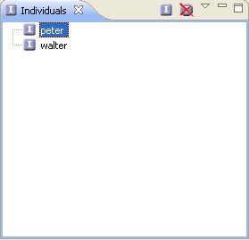

Individuals Panel
The Individuals panel displays individuals (often referred to as "instances") of the
class currently selected in the Ontology Navigator. They represent objects
in the domain and are the basic, "ground level" components of an ontology.

Creation of an Individual
In order to create a new individual, right-click within the Individuals Panel and select "New Individual".
Deletion of an Individual
In order to delete an existing Individual, right-click on the Individual which has to be deleted, and select "Delete Individual".
To edit an instance, simply select it by clicking on it. The selected instance will appear in the Entity Properties panel where it can be edited.